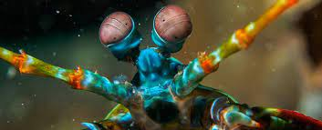

Fatos sobre o Stomatopoda
Fatos gerais
Nome científico: Odontodactylus scyllarus
| Reino | Filo | Subfilo | Classe | Subclasse | Ordem |
|---|---|---|---|---|---|
| Animalia | Arthropoda | Crustacea | Malacostraca | Hoplocarida | Stomatopoda |
Visão com muitas cores
O camarão mantis tem 16 cones de cores , fazendo com que essa criatura consiga enxergar bem mais cores do que os seres humanos
Soco super potente
O Camarão Mantis esmagador possui dois apêndices bem desenvolvidos (semelhantes a um martelo), chamados de Porretes de Dáctilo. Com essas “super patas” o animal espanca e esmaga suas presas em uma intensidade de aproximadamente 60 kg/cm² (daí o motivo de um de seus nomes ser lagosta-boxeadora). Além da enorme potência de seu soco, esse animal consegue movimentar seus apêndices tal qual um tiro de arma de fogo: seu golpe pode chegar a uma velocidade 720 km/h. Curiosamente, tanto a força quanto rapidez do ataque, não danificam sua estrutura corporal.